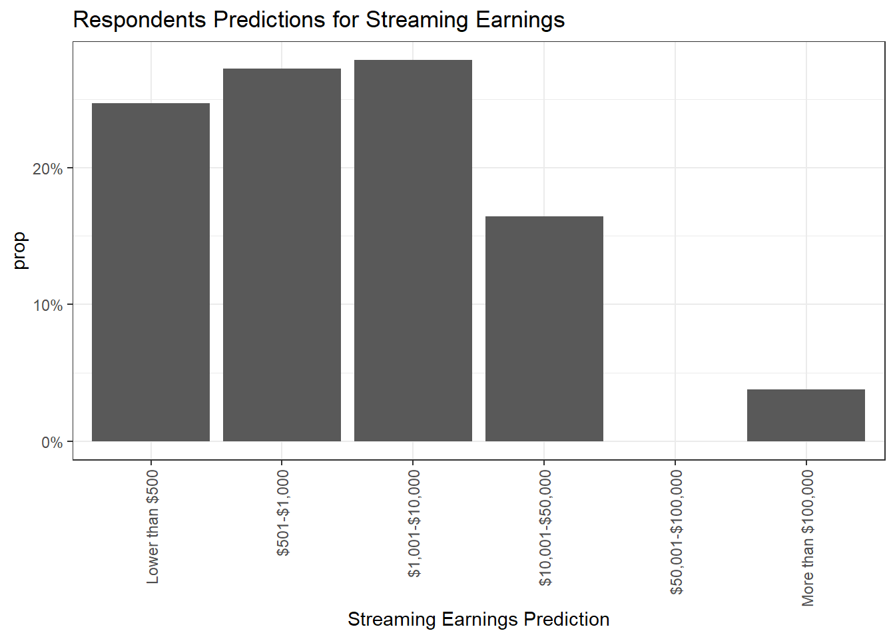
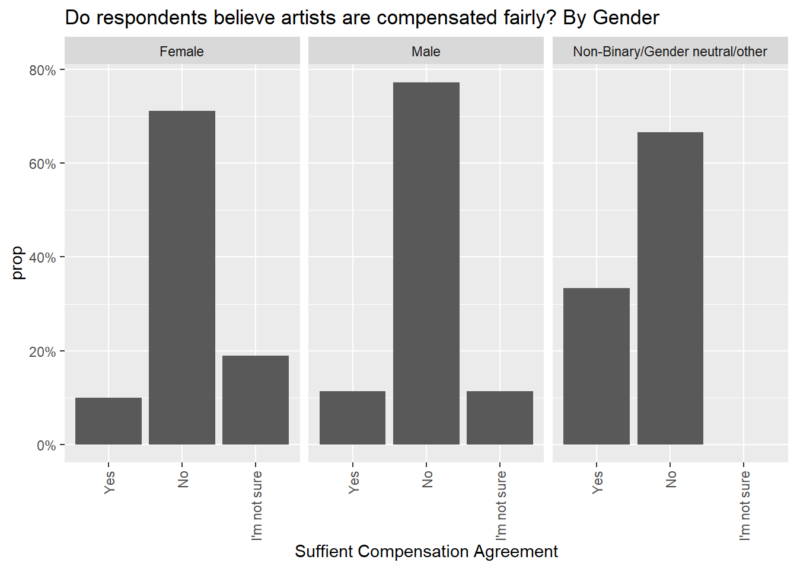

library(tidyverse)
library(ggplot2)
library(dplyr)
library(janitor)
library(crosstable)
library(gmodels)
library(readxl)
library(forcats)
knitr::opts_chunk$set(echo = TRUE, warning=FALSE, message=FALSE)Final Project - Abby Balint
finalproject
abby_balint
final
Trends in Streaming Music
Introduction
The dataset I have chosen for my final project is part of a study titled “Facing the Music: The Current State of Streaming Services in the Music Industry” done by Dr. Silviana Falcon and Jessica Korver out of Florida Southern College, published in 2020. The part of the research I will be focusing on is a survey conducted around music streaming platform usage and consumer sentiment around the fairness of artist compensation from these platforms. This survey was conducted among 163 respondents who use various music streaming platforms in varying frequency, and are likely peers of the researchers. This means a sample that likely will skew younger in age but otherwise varying in demographic background. The survey itself contains 15 questions, 8 of which center around music streaming usage, 3 around artist compensation, 3 demographic questions, and one open-ended commentary.
The data file for the survey results contains one row (case) for each of the 161 respondent’s survey responses. There are 45 columns of data in the original dataset due to some of the survey questions being multi-select or including an Other text write-in option. Once I recode some variables for analysis, the amount of columns in the dataset will increase. I should not need to pivot longer, so my amount of rows (1 per respondent) will stay the same throughout.
Below I am reading in my dataset and opening the packages I’ll be using.
streaming <- read_excel("_data/musicstreamingsurveyfinal2.xlsx", skip=1)dim(streaming)[1] 161 45The Goal
Because this is survey data that reflects response options in numerical codes as opposed to the actual text of the survey, my first task will be to recode some of the survey variables so that I can see the actual text associated with the codes within my dataset. Luckily, the survey itself was provided as part of this research project in addition to the Excel data, so that is what I will be using to recode.
My goal is to transform the dataset in a way that will allow me to make crosstabs and charts to compare key survey questions against each other to see if there is a relationship between demographics, music streaming usage, and sentiment towards artist compensation. Below, I am focusing on recoding the variables that will be key in my analysis so that I can generate charts and visualizations that will reflect the text of the response options rather than the numeric codes, as charts and tables with numerical variable values would be meaningless to a reader. I decided to recode the variables into new variables as opposed to changing the existing column values because there may be times when I want to reference or use the original codes in my visualization or analysis, for example adding up values across columns.
To do this, I used the available survey that was run in Qualtrics, a platform I am familiar with from my work. My prior knowledge of Qualtrics allows me to know how the programming interface works, so by reading the survey, looking at the logical patterns, and using my knowledge of Qualtrics, I was able to determine which numeric codes belonged with each response option for almost every question in the survey. The only one I was not able to do this for was the first question regarding genre as the number of codes did not align with the number of response options in the written survey, however this question was not part of my planned analysis.
Cleaning & tidying
streaming2 <- streaming %>%
mutate(`Total Music Time` = dplyr::case_when(
`How often do you listen to music per week?` == 1 ~ "0-10 hours",
`How often do you listen to music per week?` == 2 ~ "11-20 hours",
`How often do you listen to music per week?`== 4 ~ "21+ hours")) %>%
mutate(`Total Streaming Time` = dplyr::case_when(
`How often do you listen to streaming services per week?` == 1 ~ "0-10 hours",
`How often do you listen to streaming services per week?` == 2 ~ "11-20 hours",
`How often do you listen to streaming services per week?`== 3 ~ "21+ hours")) %>%
mutate(`Streaming Used Most` = dplyr::case_when(
`Which music streaming service would you say you use the MOST? - Selected Choice` == 1 ~ "Spotify",
`Which music streaming service would you say you use the MOST? - Selected Choice` == 2 ~ "Apple Music",
`Which music streaming service would you say you use the MOST? - Selected Choice`== 3 ~ "Pandora",
`Which music streaming service would you say you use the MOST? - Selected Choice`== 4 ~ "Amazon Music",
`Which music streaming service would you say you use the MOST? - Selected Choice`== 5 ~ "Google Play",
`Which music streaming service would you say you use the MOST? - Selected Choice`== 6 ~ "Other",
`Which music streaming service would you say you use the MOST? - Selected Choice`== 7 ~ "YouTube",
`Which music streaming service would you say you use the MOST? - Selected Choice`== 9 ~ "Tidal")) %>%
mutate(`Premium User` = dplyr::case_when(
`Are you on a Premium plan for any music streaming services (where you pay a monthly fee to stream music)?` == 1 ~ "Yes",
`Are you on a Premium plan for any music streaming services (where you pay a monthly fee to stream music)?` == 2 ~ "No")) %>%
mutate(`Streaming Earnings Guess` = dplyr::case_when(
`What is your best guess for how much an artist (on average) earned for 100,000 streams in 2018 (from Spotify/Apple Music)?` == 1 ~ "Lower than $500",
`What is your best guess for how much an artist (on average) earned for 100,000 streams in 2018 (from Spotify/Apple Music)?` == 2 ~ "$501-$1,000",
`What is your best guess for how much an artist (on average) earned for 100,000 streams in 2018 (from Spotify/Apple Music)?` == 3 ~ "$1,001-$10,000",
`What is your best guess for how much an artist (on average) earned for 100,000 streams in 2018 (from Spotify/Apple Music)?` == 4 ~ "$10,001-$50,000",
`What is your best guess for how much an artist (on average) earned for 100,000 streams in 2018 (from Spotify/Apple Music)?` == 5 ~ "$10,001-$50,000",
`What is your best guess for how much an artist (on average) earned for 100,000 streams in 2018 (from Spotify/Apple Music)?` == 6 ~ "More than $100,000")) %>%
mutate(`Suffient Compensation Agreement` = dplyr::case_when(
`According to the Trichordist Streaming Price Bible of 2018, it was found that artists earn an average of $413 for 100,000 streams. In your opinion, does that amount seem sufficient for compensation?` == 1 ~ "Yes",
`According to the Trichordist Streaming Price Bible of 2018, it was found that artists earn an average of $413 for 100,000 streams. In your opinion, does that amount seem sufficient for compensation?` == 2 ~ "No",
`According to the Trichordist Streaming Price Bible of 2018, it was found that artists earn an average of $413 for 100,000 streams. In your opinion, does that amount seem sufficient for compensation?` == 3 ~ "I'm not sure")) %>%
mutate(`Ideal Compensation` = dplyr::case_when(
`What do you believe would be an ideal rate of compensation for 100,000 streams?` == 1 ~ "Lower than $500",
`What do you believe would be an ideal rate of compensation for 100,000 streams?` == 2 ~ "$501-$1,000",
`What do you believe would be an ideal rate of compensation for 100,000 streams?` == 3 ~ "$1,001-$10,000",
`What do you believe would be an ideal rate of compensation for 100,000 streams?` == 4 ~ "$10,001-$50,000",
`What do you believe would be an ideal rate of compensation for 100,000 streams?` == 5 ~ "$50,001-$100,000",
`What do you believe would be an ideal rate of compensation for 100,000 streams?` == 6 ~ "More than $100,000")) %>%
mutate(`Age Group 1` = dplyr::case_when(
`Age` == 1 ~ "18-21",
`Age` == 2 ~ "22-35",
`Age` == 3 ~ "36-50",
`Age` == 4 ~ "51+")) %>%
mutate(`Age Group` = dplyr::case_when(
`Age` == 1 ~ "18-21",
`Age` == 2 ~ "22-35",
`Age` > 2 ~ "36+")) %>%
mutate(`Education` = dplyr::case_when(
`Current Education Level - Selected Choice` == 1 ~ "High school",
`Current Education Level - Selected Choice` == 2 ~ "Associates",
`Current Education Level - Selected Choice` == 3 ~ "Bachelors",
`Current Education Level - Selected Choice` == 4 ~ "Post Graduate",
`Current Education Level - Selected Choice` == 5 ~ "Prefer not to say",
`Current Education Level - Selected Choice` == 6 ~ "Other")) %>%
mutate(`Gender` = dplyr::case_when(
`Gender - Selected Choice` == 1 ~ "Female",
`Gender - Selected Choice` == 2 ~ "Male",
`Gender - Selected Choice` >2 ~ "Non-Binary/Gender neutral/other"))A little more tidying
Below is an example of where I used the original survey codes to add up values across rows. I generated a new variable to be able to see how many streaming platforms a respondent has ever used based on a multi-select survey question. I thought this would be a little more interesting than just generating what percentage of respondents said they had ever used any music streaming platforms, as it is common knowledge that Apple Music and Spotify are the top two most widely used. With the below variable transformation, I can see how many platforms the average consumer is using even if they have one as their “primary”.
streaming2 <- streaming2 %>%
rowwise() %>%
mutate(`Number of Platforms Ever Used` = sum(across(starts_with("Which music streaming services have you ever used? Select all that apply. - Selected Choice")), na.rm = T))I think this survey data is useful in two separate ways, with some overlap. First, I want to look at general usage of streaming services as reported by respondents as I think it can be a good basic level representation of the streaming market. Next, I want to look at sentiment around artist compensation based on some demographics or platforms used.
First I want to generate a few visualizations about what the data tells us at the highest level. From the below four charts, I can gather the following. Most of the respondent base is Age 18-21. Most are premium streaming users, and the amount of time spent streaming is varied, but most commonly in the range of 10-20 hours per week. Finally, most report having ever used somewhere between 2-4 streaming platforms. This doesn’t necessarily speak to how many a consumer uses often, as the question text only specifies “ever”, not a certain timeframe.
streaming2 %>%
filter(!is.na(`Age Group`))%>%
ggplot(aes(x=`Age Group`, fill=`Age Group`, y=..prop.., group=1), stat=count) +
geom_bar()+
scale_y_continuous(labels = scales::percent_format()) +
ggtitle("Age of Respondents")streaming2 %>%
filter(!is.na(`Premium User`))%>%
ggplot(aes(x=`Premium User`, fill=`Premium User`, y=..prop.., group=1), stat=count) +
geom_bar()+
scale_y_continuous(labels = scales::percent_format()) +
ggtitle("Premium Users")streaming2 %>%
filter(!is.na(`Total Streaming Time`))%>%
ggplot(aes(x=`Total Streaming Time`, fill=`Total Streaming Time`, y=..prop.., group=1), stat=count) +
geom_bar()+
scale_y_continuous(labels = scales::percent_format()) +
ggtitle("Total Time Spent Streaming Music")streaming2 %>%
filter(!is.na(`Number of Platforms Ever Used`))%>%
ggplot(aes(x=`Number of Platforms Ever Used`, fill=`Number of Platforms Ever Used`, y=..prop.., group=1), stat=count) +
geom_bar()+
ggtitle("Total Number of Music Streaming Platforms Ever Used") +
scale_y_continuous(labels = scales::percent_format()) +
scale_x_continuous(breaks = seq(0, 6, by = 1))Music Streaming Platform Usage
Diving into my analysis, I am starting off by generating a few crosstabs to get a high level view of the data. I decided to use the crosstable package becaus the style of charts it generates allows me to see both percentages and sample sizes with clear headers that display the n values.
Below, I decided to look at Age by streaming service used the most. Looking at this crosstab, I noticed that the sample size for Age 36+ is relatively small, so I decided to go back and group up the last two age groups in my tidying code chunk to create this crosstab.
streaming2%>%
filter(!is.na(`Age Group 1`))%>%
crosstable(c(`Streaming Used Most`), by=`Age Group 1`, total="both",
percent_pattern="{n} ({p_col})", percent_digits=1) %>%
as_flextable(compact=TRUE, header_show_n=1:6)Age Group 1 | Total | ||||
|---|---|---|---|---|---|
18-21 (N=99) | 22-35 (N=34) | 36-50 (N=13) | 51+ (N=11) | ||
Streaming Used Most | |||||
Amazon Music | 8 (8.1%) | 3 (9.1%) | 2 (18.2%) | 2 (25.0%) | 15 (9.9%) |
Apple Music | 27 (27.3%) | 7 (21.2%) | 1 (9.1%) | 2 (25.0%) | 37 (24.5%) |
Google Play | 0 (0%) | 1 (3.0%) | 0 (0%) | 0 (0%) | 1 (0.7%) |
Other | 1 (1.0%) | 0 (0%) | 1 (9.1%) | 0 (0%) | 2 (1.3%) |
Pandora | 2 (2.0%) | 4 (12.1%) | 1 (9.1%) | 3 (37.5%) | 10 (6.6%) |
Spotify | 60 (60.6%) | 17 (51.5%) | 4 (36.4%) | 1 (12.5%) | 82 (54.3%) |
Tidal | 1 (1.0%) | 0 (0%) | 2 (18.2%) | 0 (0%) | 3 (2.0%) |
YouTube | 0 (0%) | 1 (3.0%) | 0 (0%) | 0 (0%) | 1 (0.7%) |
NA | 0 | 1 | 2 | 3 | 6 |
Total | 99 (63.1%) | 34 (21.7%) | 13 (8.3%) | 11 (7.0%) | 157 (100.0%) |
Looking at the below crosstab, I can see that Spotify is most popular within every age range, but in particular 18-21. Among the 36+ group the sample is distributed more evenly between the platforms. As many of these other platforms are free to use, I can hypothesize that Ages 36+ are less likely to pay for a premium music subscription.
streaming2%>%
filter(!is.na(`Age Group`))%>%
crosstable(c(`Streaming Used Most`), by=`Age Group`, total="both",
percent_pattern="{n} ({p_col})", percent_digits=1) %>%
as_flextable(compact=TRUE, header_show_n=1:6)Age Group | Total | |||
|---|---|---|---|---|
18-21 (N=99) | 22-35 (N=34) | 36+ (N=24) | ||
Streaming Used Most | ||||
Amazon Music | 8 (8.1%) | 3 (9.1%) | 4 (21.1%) | 15 (9.9%) |
Apple Music | 27 (27.3%) | 7 (21.2%) | 3 (15.8%) | 37 (24.5%) |
Google Play | 0 (0%) | 1 (3.0%) | 0 (0%) | 1 (0.7%) |
Other | 1 (1.0%) | 0 (0%) | 1 (5.3%) | 2 (1.3%) |
Pandora | 2 (2.0%) | 4 (12.1%) | 4 (21.1%) | 10 (6.6%) |
Spotify | 60 (60.6%) | 17 (51.5%) | 5 (26.3%) | 82 (54.3%) |
Tidal | 1 (1.0%) | 0 (0%) | 2 (10.5%) | 3 (2.0%) |
YouTube | 0 (0%) | 1 (3.0%) | 0 (0%) | 1 (0.7%) |
NA | 0 | 1 | 5 | 6 |
Total | 99 (63.1%) | 34 (21.7%) | 24 (15.3%) | 157 (100.0%) |
Here is the same data represented visually two ways. The first chart shows the differing breakdown of age between each platform, while the second chart visually represents both the differences in age group, as well as the popularity of each streaming platform.
streaming2 %>%
filter(!is.na(`Streaming Used Most`))%>%
ggplot(aes(`Streaming Used Most`, fill = `Age Group`)) +
geom_bar(position="fill"
) +
labs(title = "Music Streaming Platform Most Used by Age", x="Streaming Platform", y="Age") +
theme_bw() +
scale_fill_discrete(name="Age")+
theme(axis.text.x = element_text(angle = 90, vjust = 0.5, hjust=1))streaming2 %>%
filter(!is.na(`Streaming Used Most`))%>%
ggplot(aes(`Streaming Used Most`, fill = `Age Group`)) +
geom_bar(position="dodge"
) +
labs(title = "Music Streaming Platform Most Used by Age", x="Streaming Platform", y="Age") +
theme_bw() +
scale_fill_discrete(name="Age")+
theme(axis.text.x = element_text(angle = 90, vjust = 0.5, hjust=1))Below I can see that 81% of the youngest age group subscribes to the premium version of a platform, whereas only 58% of the oldest age group does, speaking to my above prediction. It will be interesting to see how this plays into sentiment around streaming compensation, as we can hypothesize that those not willing to pay for a premium version of a streaming platform may not be inclined to support increased artist compensation.
streaming2%>%
filter(!is.na(`Age Group`))%>%
crosstable(c(`Premium User`), by=`Age Group`, showNA="no", total="both",
percent_pattern="{n} ({p_col})", percent_digits=1) %>%
as_flextable(compact=TRUE, header_show_n=1:6)Age Group | Total | |||
|---|---|---|---|---|
18-21 (N=99) | 22-35 (N=34) | 36+ (N=24) | ||
Premium User | ||||
No | 18 (18.2%) | 9 (27.3%) | 8 (42.1%) | 35 (23.2%) |
Yes | 81 (81.8%) | 24 (72.7%) | 11 (57.9%) | 116 (76.8%) |
Total | 99 (63.1%) | 34 (21.7%) | 24 (15.3%) | 157 (100.0%) |
I generated the below crosstab to investigate which platforms had the highest percentage of premium users. Only Apple Music and Spotify had enough sample to really look at this distribution, but out of the two Apple Music does lead over Spotify.
streaming2%>%
filter(!is.na(`Streaming Used Most`))%>%
crosstable(c(`Premium User`), by=`Streaming Used Most`, total="both",
percent_pattern="{n} ({p_col})", percent_digits=1) %>%
as_flextable(compact=TRUE, header_show_n=1:10)Streaming Used Most | Total | ||||||||
|---|---|---|---|---|---|---|---|---|---|
Amazon Music (N=15) | Apple Music (N=37) | Google Play (N=1) | Other (N=2) | Pandora (N=10) | Spotify (N=85) | Tidal (N=3) | YouTube (N=1) | ||
Premium User | |||||||||
No | 11 (73.3%) | 2 (5.4%) | 0 (0%) | 0 (0%) | 9 (90.0%) | 12 (14.1%) | 1 (33.3%) | 0 (0%) | 35 (22.7%) |
Yes | 4 (26.7%) | 35 (94.6%) | 1 (100.0%) | 2 (100.0%) | 1 (10.0%) | 73 (85.9%) | 2 (66.7%) | 1 (100.0%) | 119 (77.3%) |
Total | 15 (9.7%) | 37 (24.0%) | 1 (0.6%) | 2 (1.3%) | 10 (6.5%) | 85 (55.2%) | 3 (1.9%) | 1 (0.6%) | 154 (100.0%) |
And represented more visually:
streaming2 %>%
filter(!is.na(`Streaming Used Most`))%>%
ggplot(aes(`Streaming Used Most`, fill = `Premium User`)) +
geom_bar(position="dodge"
) +
labs(title = "Music Streaming Platform Most Used by Age", x="Streaming Platform", y="Age") +
theme_bw() +
scale_fill_discrete(name="Premium User")+
theme(axis.text.x = element_text(angle = 90, vjust = 0.5, hjust=1))In the below crosstabs, I can see that the number of platforms used remains relatively consistent across demos. However, I believe it would be likely that those who do not have premium subscriptions would be more likely to bounce between platforms, so lets investigate that next.
streaming2 %>%
filter(!is.na(`Age Group`))%>%
crosstable(c(`Number of Platforms Ever Used`), by=`Age Group`,showNA="no", total="both",
percent_pattern="{n} ({p_col})", percent_digits=1) %>%
as_flextable(compact=TRUE, header_show_n=1:6)Age Group | Total | |||
|---|---|---|---|---|
18-21 (N=99) | 22-35 (N=34) | 36+ (N=24) | ||
Number of Platforms Ever Used | ||||
Min / Max | 1.0 / 6.0 | 0 / 6.0 | 0 / 6.0 | 0 / 6.0 |
Med [IQR] | 3.0 [2.0;4.0] | 3.0 [2.0;4.0] | 3.0 [1.8;3.2] | 3.0 [2.0;4.0] |
Mean (std) | 3.4 (1.3) | 2.9 (1.4) | 2.6 (1.8) | 3.2 (1.5) |
N (NA) | 99 (0) | 34 (0) | 24 (0) | 157 (0) |
crosstable(streaming2, c(`Number of Platforms Ever Used`), by=`Gender`,showNA="no", total="both",
percent_pattern="{n} ({p_col})", percent_digits=1) %>%
as_flextable(compact=TRUE, header_show_n=1:6)Gender | Total | |||
|---|---|---|---|---|
Female (N=111) | Male (N=44) | Non-Binary/Gender neutral/other (N=3) | ||
Number of Platforms Ever Used | ||||
Min / Max | 0 / 6.0 | 0 / 6.0 | 3.0 / 5.0 | 0 / 6.0 |
Med [IQR] | 3.0 [2.0;4.0] | 3.0 [2.0;4.2] | 4.0 [3.5;4.5] | 3.0 [2.0;4.0] |
Mean (std) | 3.0 (1.4) | 3.4 (1.5) | 4.0 (1.0) | 3.1 (1.5) |
N (NA) | 111 (0) | 44 (0) | 3 (0) | 161 (0) |
The data shows this is actually not true, with the median of 3 platforms being the same and the mean being within .2.
crosstable(streaming2, c(`Number of Platforms Ever Used`), by=`Premium User`,showNA="no", total="both",
percent_pattern="{n} ({p_col})", percent_digits=1) %>%
as_flextable(compact=TRUE, header_show_n=1:6)Premium User | Total | ||
|---|---|---|---|
No (N=35) | Yes (N=119) | ||
Number of Platforms Ever Used | |||
Min / Max | 1.0 / 6.0 | 1.0 / 6.0 | 0 / 6.0 |
Med [IQR] | 3.0 [3.0;4.0] | 3.0 [2.0;4.0] | 3.0 [2.0;4.0] |
Mean (std) | 3.4 (1.1) | 3.2 (1.4) | 3.1 (1.5) |
N (NA) | 35 (0) | 119 (0) | 161 (0) |
Streaming Usage Conclusion
To conclude this first part of my analysis, I think this survey data paints a good base-level depiction of streaming usage. As previously noted, the demographic makeup of the sample is a bit limited, but I think the results do paint a relatively accurate picture of which streaming services are most popular and the prominence of premium streaming subscriptions. I think it also reflects an industry-wide sentiment that varying generations feel differently towards streaming, as those in the Gen Z age range have been exposed to streaming most of their lives and therefore are more likely to see it as the implied way to consume music, particularly in current American society.
Sentiment Around Artist Streaming Compensation
The second half of the survey focuses on asking respondents what they currently know about how much artists are compensated on streaming platforms for 100,000 streams, and then what they believe would be an ideal rate of compensation for 100,000 streams. Although simplistic, I think this is an effective way to gauge what consumers know about how the streaming industry has changed the way artists make money, and to show if consumers feel for artists and wish that they would get paid more.
Below we can see that most respondents expect artists to earn low wages per 100,000 streams, with over 20% saying they would guess “under $500”.
streaming2 %>%
filter(!is.na(`Streaming Earnings Guess`))%>%
ggplot(aes(`Streaming Earnings Guess`, y= ..prop.., group=1), stat=count) +
geom_bar() +
labs(title = "Respondents Predictions for Streaming Earnings", x="Streaming Earnings Prediction") +
theme_bw() +
theme(axis.text.x = element_text(angle = 90, vjust = 0.5, hjust=1))+
scale_y_continuous(labels = scales::percent_format()) +
scale_x_discrete(limits=c("Lower than $500", "$501-$1,000", "$1,001-$10,000",
"$10,001-$50,000", "$50,001-$100,000", "More than $100,000"))
Below I generated a series of four charts, the first breaking down by Age and Gender whether respondents believe artists are fairly compensated. Males are slightly more likely to think “no”, while age 36+ is slightly more likely to think “yes”, however across the board the majority response was that no one thinks artists are fairly compensated.
streaming2 %>%
filter(!is.na(`Age Group`))%>%
ggplot(aes(x=`Suffient Compensation Agreement`, fill=`Suffient Compensation Agreement`, y=..prop.., group=1), stat=count) +
geom_bar()+
ggtitle("Do respondents believe artists are compensated fairly? By Age") +
facet_wrap (~`Age Group`) +
scale_y_continuous(labels = scales::percent_format()) +
theme(axis.text.x = element_text(angle = 90, vjust = 0.5, hjust=1)) +
scale_x_discrete(limits=c("Yes","No", "I'm not sure"))streaming2 %>%
filter(!is.na(`Gender`))%>%
ggplot(aes(x=`Suffient Compensation Agreement`, fill=`Suffient Compensation Agreement`, y=..prop.., group=1), stat=count) +
geom_bar()+
ggtitle("Do respondents believe artists are compensated fairly? By Gender") +
facet_wrap (~`Gender`) +
scale_y_continuous(labels = scales::percent_format()) +
theme(axis.text.x = element_text(angle = 90, vjust = 0.5, hjust=1))+
scale_x_discrete(limits=c("Yes","No", "I'm not sure"))
The following charts demonstrate what respondents think fair pay would be, with a varied response. Most reported somewhere in the middle range of the response options. Males had a more varied response than females. Looking at this distribution, I find it frustrating that the response options contained such wide ranges such as $1,000-$10,000, or $10,001-$50,000, as it makes it difficult to see how respondents really feel because there is a huge difference between the high and low end of these ranges.
What we can see is that users support artists being paid more than what they predicted they are currently paid, which shows consumer support for increased artist wages.
streaming2 %>%
filter(!is.na(`Age Group`)) %>%
ggplot(aes(x=`Ideal Compensation`, fill=`Ideal Compensation`, y=..prop.., group=1), stat=count) +
geom_bar()+
ggtitle("Ideal Compensation Rate for Artist by Respondent Age") +
scale_y_continuous(labels = scales::percent_format()) +
theme(axis.text.x = element_text(angle = 90, vjust = 0.5, hjust=1))+
scale_x_discrete(limits=c("Lower than $500", "$501-$1,000", "$1,001-$10,000",
"$10,001-$50,000", "$50,001-$100,000", "More than $100,000"))streaming2 %>%
filter(!is.na(`Age Group`)) %>%
ggplot(aes(x=`Ideal Compensation`, fill=`Ideal Compensation`, y=..prop.., group=1), stat=count) +
geom_bar()+
ggtitle("Ideal Compensation Rate for Artist by Respondent Age") +
facet_wrap (~`Age Group`) +
scale_y_continuous(labels = scales::percent_format()) +
theme(axis.text.x = element_text(angle = 90, vjust = 0.5, hjust=1))+
scale_x_discrete(limits=c("Lower than $500", "$501-$1,000", "$1,001-$10,000",
"$10,001-$50,000", "$50,001-$100,000", "More than $100,000"))streaming2 %>%
filter(!is.na(`Gender`))%>%
ggplot(aes(x=`Ideal Compensation`, fill=`Ideal Compensation`, y=..prop.., group=1), stat=count) +
geom_bar()+
ggtitle("Ideal Compensation Rate for Artist by Respondent Gender") +
facet_wrap (~`Gender`) +
scale_y_continuous(labels = scales::percent_format()) +
theme(axis.text.x = element_text(angle = 90, vjust = 0.5, hjust=1)) +
scale_x_discrete(limits=c("Lower than $500", "$501-$1,000", "$1,001-$10,000",
"$10,001-$50,000", "$50,001-$100,000", "More than $100,000"))Artist Compensation Conclusion
Wrapping up this section, I think it’s interesting that across age and gender, the sentiment that artists are unfairly compensated remains true. I think an interesting expansion of this would be to poll consumers on how much they would be wiling to pay for their preferred premium streaming service monthly, as an increase in compensation for artists would likely be followed by a rise in the price of premium services.
Overall Conclusion
Overall, I found this dataset to be interesting but limiting in terms of sample size and range of questions. I think this survey serves as a great jumping off point that could be expanded upon if ran again in the future. For example, how much is the public willing to pay for ad-free streaming? Would they be interested in different purchasing options, like tiered price plans based on the amount of ads/features included? I think another piece that can’t be ignored is the sample size limitations of this survey. With a much larger sample, or even more importantly, a more varied respondent base, I think a survey similar to this could give real insight into how streaming users are feeling about this premium service in the market.
Another question type that I feel this survey would benefit from is 0-10 or likert scale questions. For example, “How willing would you be to pay more for a streaming service if you knew it paid more to its artists than it’s competitors?”. Or, “On a scale of 1-10, how would you rate your user experience on the following platforms?” for the platforms that each respondent has reported using in the past. These sorts of attitudinal questions, or questions that speak to specific attributes about each platform, could be interesting to combine with data about artist compensation. I would hypothesize that many who report supporting higher compensation for artists support it more in theory than in practice, as users likely look to the most competitive pricing already when choosing a streaming service to use.
Reflection
Going into this class and project as someone who had never used R with no technical background at all, this was challenging overall for me. I decided to use a survey data set because it is what I am most familiar with for my career. What was most challenging for me was picking out focus in on in the dataset in terms of recoding and transforming the data, as well as where to start with analyzing. Although I work with survey data for my job, I do not analyze data but rather work with it from an operational and project management perspective. I tried to focus on the beginnings of analysis here to push myself, and if I was to continue with this project I would look for deeper ways to cross tab the data, like maybe combining questions/demos to create persona-like segments in the data for analysis. As mentioned above, if I was running this survey there are a lot of ideas I had of how it could be expanded upon.
I realized while working on this project that relatively simple survey data like this that isn’t numerical in nature doesn’t lend itself to the most interesting charts. Rather, the most to discover lays in crosstabs and simple charts and figures that act as more of an accompaniment to a verbal explanation. I tried to use a mix of both charts and crosstabs and break charts out by segment when useful to expand on the limited data as much as possible. To do similar work in the future I would look for a more robust data source, such as a survey with more sample or more questions, or both.
Overall, I think this project was useful in helping me to utilize what I learned in this class, and wrapping up I feel that I have a good basic understanding of the functionality of R as well as how to structure basic codes. I found myself having an easier and easier time attempting each challenge and leading into the final project, although I still fill as though I only touched the very very tip of the iceberg with an infinite amount still to learn. My goal in learning R is to contribute at my job by having another tool that I am familiar with do things like filter data, provide specific data cuts, and clean or transform where necessary. I think this project helped me in honing those skills.
Bibliography
Survey dataset:
Korver, Jessica; Falcon, Dr. Silviana (2020), “Facing the Music: The Current State of Streaming Services in the Music Industry”, Mendeley Data, V1, doi: 10.17632/kjv64jz4kz.1
Link: https://data.mendeley.com/datasets/kjv64jz4kz/1
CC BY 4.0 : https://creativecommons.org/licenses/by/4.0/
Accompanying questionnaire:
Korver, Jessica (2020), “Facing the Music: The Current State of Streaming Services in the Music Industry”, Florida Southern College, pages 50-52.
Course textbook:
Wickham, H., & Grolemund, G. (2016). R for data science: Visualize, model, transform, tidy, and import data. OReilly Media.
Link: https://r4ds.had.co.nz/explore-intro.html
R programming language:
R Core Team (2022). R: A language and environment for statistical computing. R Foundation for Statistical Computing, Vienna, Austria. URL https://www.R-project.org/.
R Packages:
Tidyverse: Wickham H, Averick M, Bryan J, Chang W, McGowan LD, François R, Grolemund G, Hayes A, Henry L, Hester J, Kuhn M, Pedersen TL, Miller E, Bache SM, Müller K, Ooms J, Robinson D, Seidel DP, Spinu V, Takahashi K, Vaughan D, Wilke C, Woo K, Yutani H (2019). “Welcome to the tidyverse.” Journal of Open Source Software, 4(43), 1686. doi:10.21105/joss.01686 https://doi.org/10.21105/joss.01686.
ggplot2: H. Wickham. ggplot2: Elegant Graphics for Data Analysis. Springer-Verlag New York, 2016.
dpylr: Wickham H, François R, Henry L, Müller K (2022). dplyr: A Grammar of Data Manipulation. R package version 1.0.10, https://CRAN.R-project.org/package=dplyr.
janitor: Firke S (2021). janitor: Simple Tools for Examining and Cleaning Dirty Data. R package version 2.1.0, https://CRAN.R-project.org/package=janitor.
crosstable: Chaltiel D (2022). crosstable: Crosstables for Descriptive Analyses. R package version 0.5.0, https://CRAN.R-project.org/package=crosstable.
gmodels: Warnes GR, Bolker B, Lumley T, SAIC-Frederick RCJCfRCJaC, Program IFbtIR, NIH ot, Institute NC, NO1-CO-12400. CfCRuNC (2022). gmodels: Various R Programming Tools for Model Fitting_. R package version 2.18.1.1, https://CRAN.R-project.org/package=gmodels.
readxl: Wickham H, Bryan J (2022). readxl: Read Excel Files. R package version 1.4.1, https://CRAN.R-project.org/package=readxl.
forcats: Wickham H (2022). forcats: Tools for Working with Categorical Variables (Factors). R package version 0.5.2, https://CRAN.R-project.org/package=forcats.